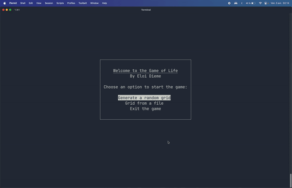

Introduction
The Game of Life is a cellular automaton devised by the British mathematician John Horton Conway in 1970. It unfolds on a grid where each cell can be in one of two states: alive or dead.
How it Works
The game evolves through generations, with the state of each cell in the next generation determined by its current state and that of its eight immediate neighbors, according to the following rules:
Any dead cell with exactly three live neighbors becomes a live cell.
Any live cell with two or three live neighbors stays alive; otherwise, it dies.
In this program, the grid is finite in size. Therefore, a cell at the grid’s edge has neighbors on the opposite edge, ensuring each cell has exactly 8 neighbors. This “edge wrapping” feature can be disabled at runtime with the -nw or –no-wrapping argument.